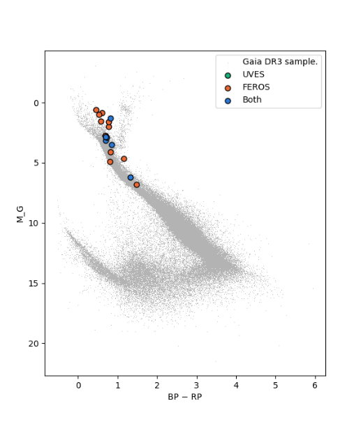
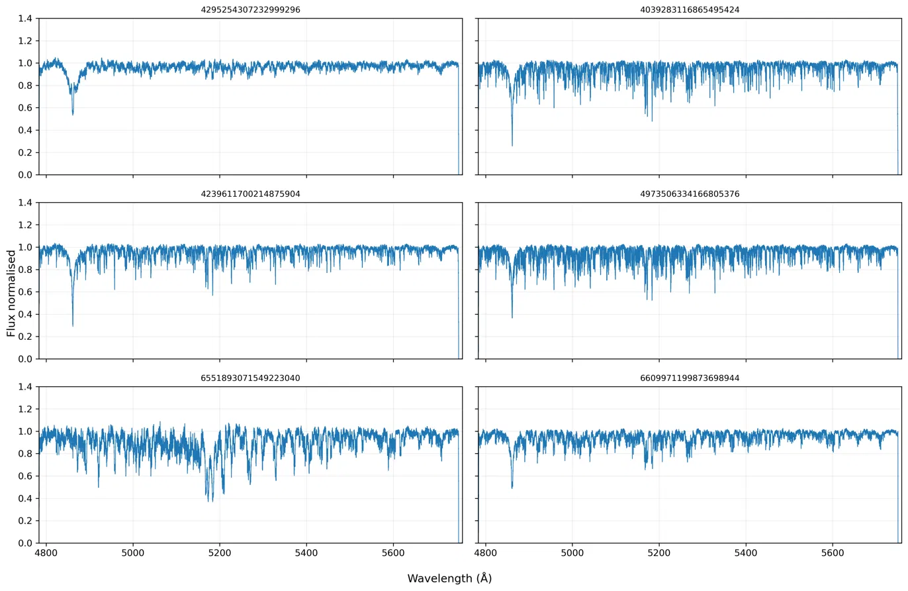
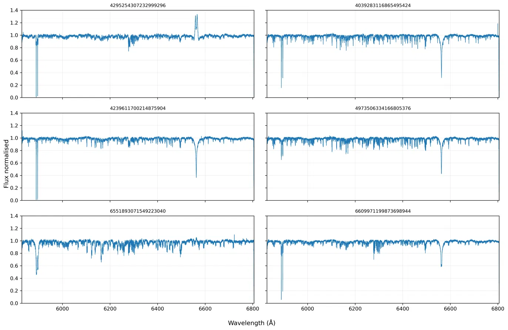

Unlikely Friends: the Hunt for Neutron Stars with Stellar Companions.
Overview
When massive stars (M > 8 M☉) near the end of their lives, they can undergo spectacular explosions and leave behind some of the most interesting and poorly understood objects in the universe: Neutron stars and black holes. As most massive stars can be found in binaries, we expect many of these compact, dark objects to also have a companion. For a while, after one star in the binary has exploded, but the other is still happily shining and fusing elements, we might thus find an unlikely friendship between a star and a stellar corpse. While population models predict millions of such systems in the Milky Way, only a few have been found through extensive searches using both ground- and space-based spectroscopy, astrometry and photometry. Many times, astronomers have been tricked by so-called ‘imposter’ systems that masquerade as containing a compact object, but upon closer inspection revealed a stellar companion, hiding in the light of the primary star.
(Project Proposal. Dr. Rhys Seeburger, 2026)
A link to the code used for the project can be found on GitHub here.
Data
The Gaia DR3 database was queried using ADQL under these parameters to find candidates: the lower bound mass of the seconday star must be higher than the upper bound of the primary, the mass of the lower bound of the secondary star must be >1.5M☉ and <3M☉, the significance of the orbital solution must be >20. This returned 23 candidates. These candidates were then checked against the FEROS and UVES databases finding 18 and 6 candidates with spectra respectively (the 6 UVES candidates were also found in FEROS). UVES was chosen as the primary dataset due to the nature of the FEROS data and the work required to process it. This left us with the following candidates, GAIA_ID: 4295254307232999296, 4039283116865495424, 4239611700214875904, 4973506334166805376, 6551893071549223040, and 6609971199873698944.
Results
While this project is still in it's infancy, it has produced some results.


